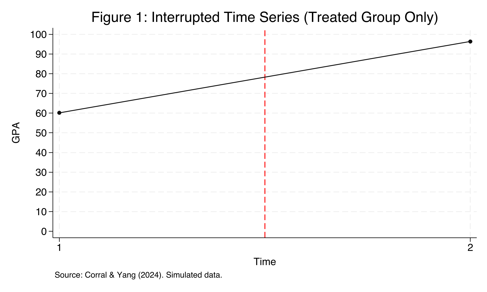
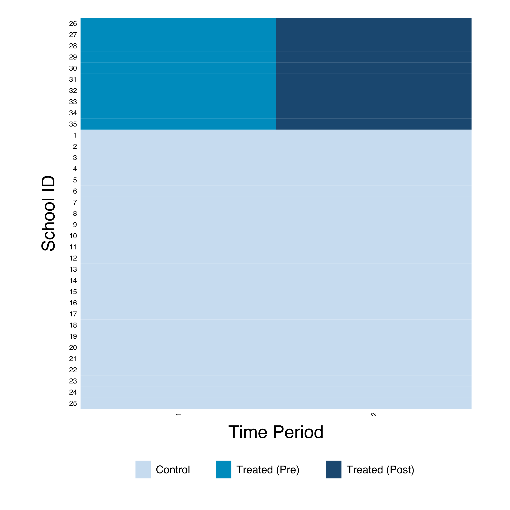
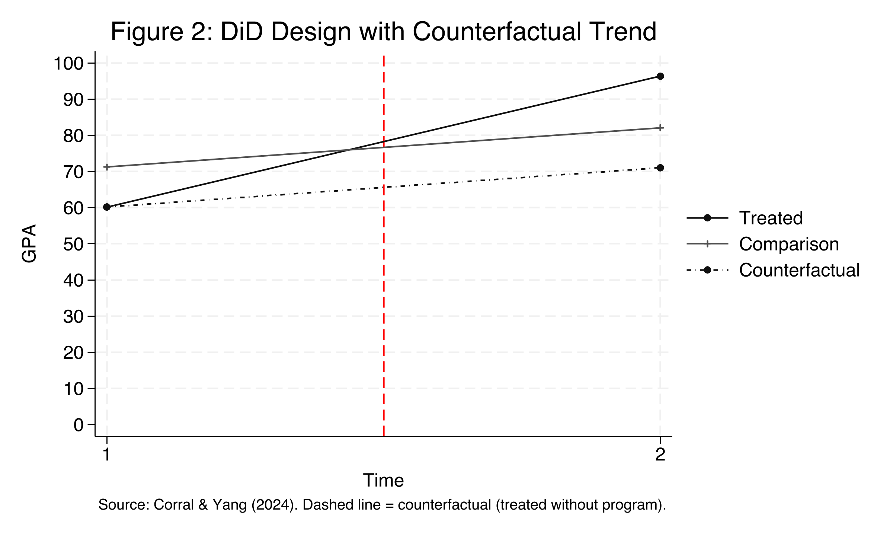
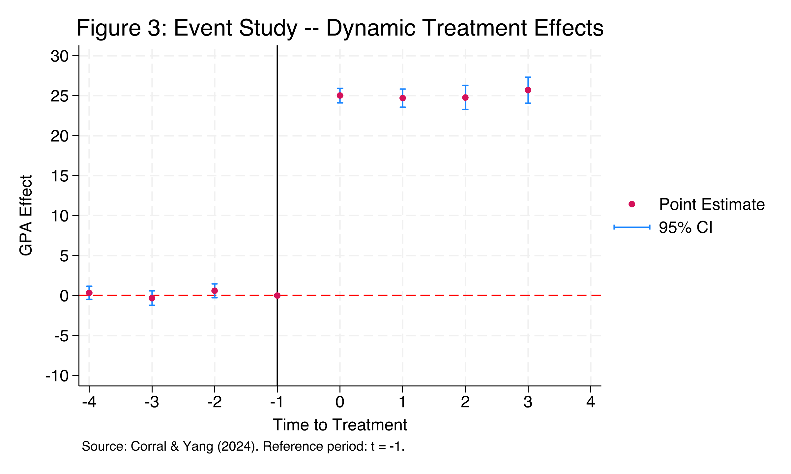

A program lifts the treated group’s GPA by 36 points — but is that the program?
A fictitious government runs an after-school tutoring program in 10 of 35 high schools to raise the GPA of low-income students.
Look only at the treated schools and GPA jumps from 60 to 96. Spectacular. Or is something else rising too?
The naive before-after answer is 36.20 — the credible answer is much smaller

Interrupted Time Series — treated schools only. GPA leaps across the red treatment line from ~60 to ~96.
Where we’re going
The naive ITS trap: before-after overstates the effect
The 2×2 DiD design — a comparison group rebuilds the counterfactual
Five equivalent Stata estimators land on one number
The event study — testing parallel trends with pre-treatment leads
The Investigation
Act II
The lab: 35 schools, 2 periods, a clean simultaneous rollout
Outcome — gpa, a school’s mean GPA on a 0–100 scale
Treatment — 10 schools get tutoring; 25 are the comparison group
Design — every treated school switches on at the same time (no staggering)
A strongly-balanced panel: 35 schools × 2 periods = 70 observations. The estimand is the ATT\(E[Y_i(1)-Y_i(0)\mid D_i=1]\) — the effect for the schools that actually got the program.
All 10 treated schools switch on together — the ideal 2×2 setup

Treatment-timing heatmap. Treated schools (IDs 26–35) flip pre → post simultaneously at time 2; the 25 comparison schools never switch.
DiD rebuilds the counterfactual from the comparison group’s drift

The comparison group (rising gently) supplies the dashed counterfactual: where the treated would have ended up without the program.
Parallel trends: absent treatment, the two groups would have moved together
Different starting levels are fine. Different changes — divergent slopes — would break the design. This is the one assumption that does the causal work.
The double difference: subtract the comparison group’s trend from the treated group’s
Replace the single interaction with one coefficient \(\theta_j\) per period relative to onset. Leads (\(j<0\)) test pre-trends; lags (\(j\geq 0\)) trace dynamics. The base period \(j=-1\) is omitted.
Flat pre-trends, then a sharp persistent jump — the identification check passes

Event study. Pre-treatment coefficients hug zero; at onset the effect leaps to ~25 and holds. Bands are 95% CIs.
Leads near zero, lags near 25 — the table behind the picture
Period
Coefficient
SE
Sig.?
lead 4
0.342
0.401
no
lead 3
−0.322
0.441
no
lead 2
0.593
0.423
no
lag 0
25.028
0.445
yes
lag 1
24.705
0.559
yes
lag 2
24.768
0.739
yes
lag 3
25.701
0.797
yes
Lags span < 1 GPA point across four periods: no fade-out, no ramp-up — an immediate, sustained effect.
Does passing the pre-trends test make the result causal? Not by itself
Objection. Flat leads and five matching estimators still cannot prove the comparison group is a valid counterfactual.
Response. Correct. The ATT is identified only under parallel trends and SUTVA (no spillovers, consistent treatment). The event study is consistent with parallel trends — it never proves them. A failed pre-trend would refute the design; a passed one only fails to refute it.
Let the comparison group, not the calendar, tell you what the program did.